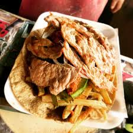

Home
Tacos de placeros

These are hearty, market-style tacos sold
in Puebla’s puestos callejeros.
They’re piled high with juicy meats (often cecina, chorizo, or pierna adobada),
refried beans, nopales, and fresh garnishes.
Ingredients (for 4–6 tacos):
- 4 thick corn tortillas (handmade if possible)
- 200g cecina (salted beef/pork) or pierna adobada (marinated pork)
- 1 large potato (sliced into 1cm-thick rounds, fried until golden)
- 1 cup refried beans (cooked with avocado leaves for authenticity)
- ½ cup cooked nopales (grilled or boiled cactus paddles)
- 1 poblano pepper (roasted & sliced into strips, optional but classic)
- Oil (for frying)
- Crumbled queso fresco
- Chopped white onion
- Sliced avocado
- Pasilla salsa (recipe below)
- Lime wedges
Instructions:
- Fry the potatoes:
Heat oil in a pan, fry potato slices until golden and crisp.
Drain on paper towels and salt lightly.
- Cook the meat:
For cecina: Grill or pan-sear 1–2 minutes per side.
For pierna adobada: Use pre-cooked shredded pork marinated in adobo sauce.
- Warm the beans:
Reheat refried beans (add a splash of water if too thick).
- Assemble (layer like a Poblano!):
Spread beans on the tortilla.
Add meat, then crispy potatoes, nopales, and poblano strips (if using).
Top with queso fresco, onion, avocado, and pasilla salsa.
Finish with lime juice and papaloquelite.
- Key tip: Serve open-faced (not folded) with a fork and knife—this is how
they’re eaten in Puebla’s markets!